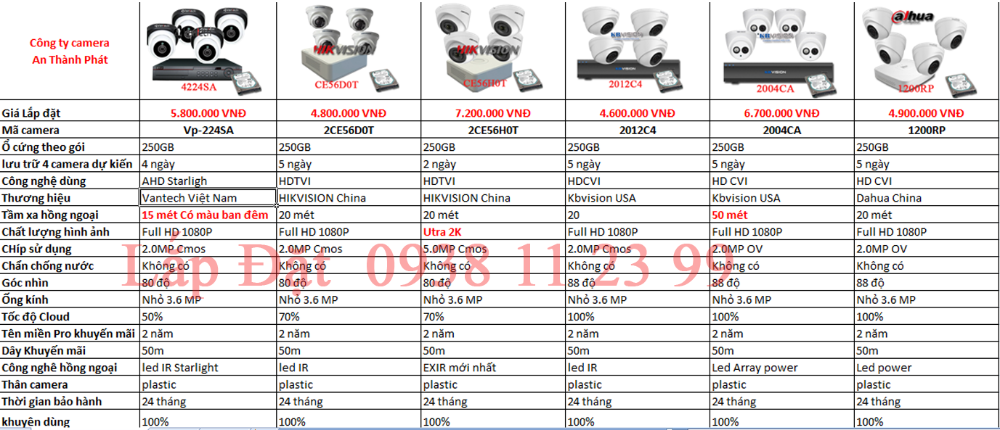
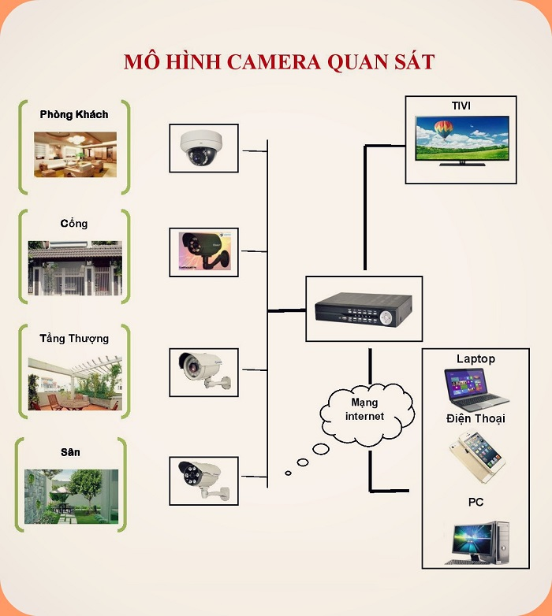
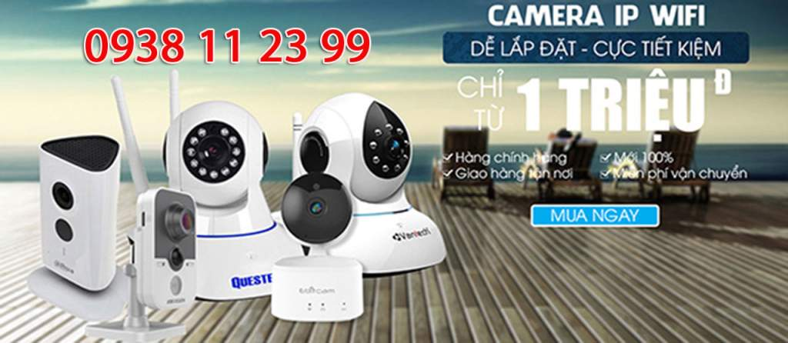
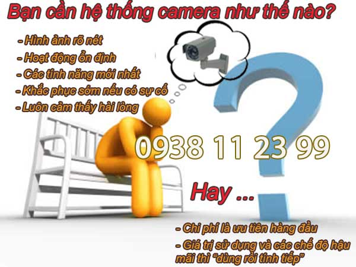
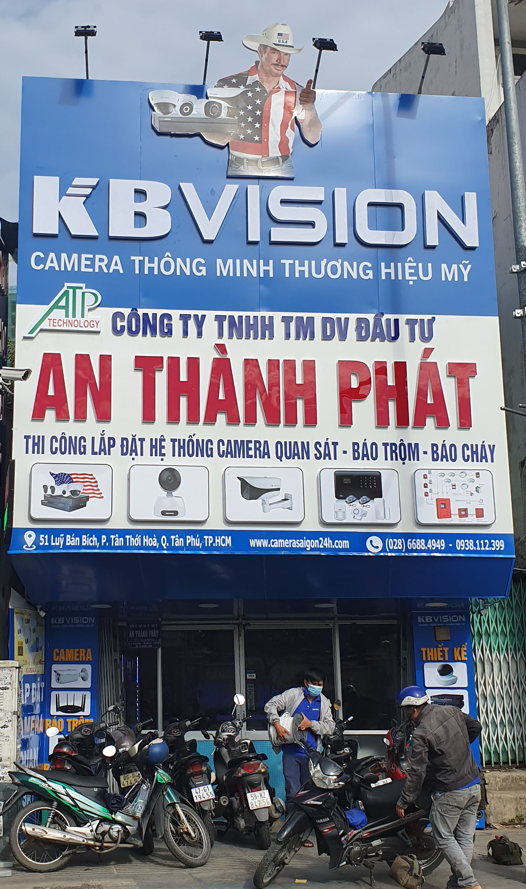

Vì Sao Găn Camera Quận 4
Vì lẽ đó các công ty camera mọc lên ngày một nhiều, không chỉ khách hàng ở quận 4 mà cả thành phố Hồ Chí Minh cũng khó mà tìm cho mình một đơn vị lắp đặt camera ở nơi bạn sinh sống, làm việc. Để thuận tiện cho việc bảo hành, bảo trì, thay thế sau này.
Công ty An Thành Phát với hơn 9 năm kinh nghiệm trong nghề lắp đặt camera tại HCM. Đã được biết đến với phương châm " Khách Hàng Là Người Thân" . Công ty chuyên nhận thi công lắp đặt camera tại quận 4 nói riêng và cả Tphcm nói chung.
Với đội ngũ nhân viên có trình độ, được đào tạo bải bản, có nhiều năm kinh nghiệm trong việc thi công lắp đặt hệ thống camera giám sát, hệ thống camera chống trộm, camera an ninh...cho các hộ gia đình, cửa hàng, công ty, doanh nghiệp, lắp đặt camera nhà xưởng ...Sẽ làm hài lòng mọi khách hàng kỹ tính nhất.
Các kỹ sư lành nghề trong công ty An Thành Phát sẽ đưa ra phương án, giải pháp tối ưu nhất cho một bộ camera tại quận 4 với giá cả hợp lý nhất. Đảm bảo lắp đặt trọn bộ camera không phát sinh chi phí nào khác.

Gắn camera chống trộm tại quận 4
Các sản phẩm do các kỹ sư tư vấn là các sản phẩm mới nhất, tốt nhất, được nhiều người dùng trên thị trường. Các sản phẩm này sẽ được chính bạn là người kiểm tra kỹ càng trước khi lắp đặt.

Quy trình lắp đặt camera tại quận 4 của công ty đối với 1 khách hàng bất kỳ.
Bước 1: Tiếp nhận thông tin từ khách hàng gọi đến, trao đổi tư vấn qua điện thoại để khách hàng hình dung sơ bộ một hệ thống camera gồm những gì, tiện ích mà camera mang lại. Đặc biệt là lắng nghe nhu cầu thật sự của khách hàng, là lắp camera để làm gì ( chống trộm, giám sát, quan sát hoặc theo dõi ai đó...). khi có được mục đích lắp camera rồi thì chúng tôi sang bước tiếp theo.
Bước 2: Sau cuộc điện thoại, công ty sẽ cho người đến trực tiếp địa điểm lắp đặt để khảo sát, xem xét tình hình địa thế... có đủ cơ sở để trang bị một bộ camera theo yêu cầu của khách hàng hay không?.Từ đó nhân viên sẽ đưa ra các giải pháp để bạn lựa chọn ( hoặc là thế này hoặc là thế kia) tùy vào nhu cầu bạn muốn lắp camera mà bạn tự quyết định chọn một trong các giải pháp mà nhân viên tư vấn. Bạn có thể tự nghĩ ra một phương án nào đó rồi trao đổi với nhân viên nếu đúng yêu cầu kỹ thuật thì giải pháp của bạn sẽ được triển khai ngay.
Bước 3: Lên báo giá, bản vẽ, phương án thi công, thời gian thì công, chế độ bảo hành gởi cho khách hàng tham khảo.
Bước 4: Cung cấp các giấy tờ như ( báo giá, hợp đồng, chứng chỉ CO, CQ, biên bản nghiệm thu đầu vào...) nếu có yêu cầu. Gởi cho khách hàng và tạm ứng tiền thi công đợt 1. Đây chỉ là thủ tục với các dự án lớn còn đối với hộ gia đình bạn hãy yên tâm khi thi công camera xong bên công ty mới nhận tiền thanh toán nhé.
Bước 5: Nhân viên kỹ thuật tiến hành lắp đặt camera theo đúng bản vẽ thiết kế, các thiết bị đúng theo báo giá. Thi công đạt thẩm mỹ, an toàn, nghiêm túc.
Bước 6: Bàn giao hệ thống camera, hướng dẫn sử dụng cho khách hàng trên các thiết bị như tivi, điện thoại, laptop... Ký thanh toán hợp đồng theo báo giá nói trên. ( Bao gồm chi phí phát sinh trong quá trình thi công).
Lắp camera biệt thự tại quận 4
Mời bạn tham khảo báo giá lắp đặt trọn bộ camera tại quận 4 không pháp sinh chị phí.
Bạn có thể chọn các mẫu camera muốn lắp cho bạn nhé.
Bạn nhận được gì khi lắp camera của công ty An Thành Phát.
+ Giám sát 24/24 qua điện thoại, laptop, tivi.....ở bất cứ nơi nào có internet hoặc 3G.
+ Nếu bạn không xem trực tiếp được thì hệ thống sẽ lưu trữ dữ liệu trong bộ nhớ. Bạn có thể xem lại bất cứ lúc nào.
+ Camera hổ trợ thu tiếng nói giúp bạn nắm bắt rỏ hơn.
+ Hệ thống camera chống trộm có thể phát ra tín hiệu cảnh báo khi có người đột nhật, vượt rào...
lắp camera xem qua mạng tại quận 4
+ Camera kết hợp với khóa từ không dây. Khi có người mở cửa camera sẽ phát lên tiếng “ hú” cảnh báo.
+ Bạn ở văn phòng bạn có thể giới thiệu cho đối tác của bạn về quy mô của xưởng sản xuất thông qua hệ thống camera mà An Thành Phát lắp đặt.
+ Giảm thiểu chi phí quản lý và đánh giá năng lực của từng nhân viên một cách trung thực nhất.
Ngoài ra tùy vào mục đích lắp đặt camera mà An Thành Phát sẽ đưa ra các giải pháp tối ưu nhất. Phù hợp với từng điều kiện khách hàng. Mỗi giải pháp có những tiện ích khác nhau.
DỊCH VỤ LẮP CAMERA TẠI QUẬN 4.
LẮP CAMERA GIÁM SÁT VĂN PHÒNG QUẬN 4

Lắp camera giám sát văn phòng tại Quận 4 là một trong những dịch vụ công ty camera An Thành phát triển khai thông thường sử dụng cho những công ty dịch vụ có văn phòng đặt tại trụ sở Quận 4. Thông thương camera giám sát văn phòng thường sử dụng những gói camera thông dụng giá rẻ, tùy vào đặt điểm của mỗi văn phòng có thể nâng cấp lên 1 camera có thu âm để phù hợp việt giám sát quản lý nhân viên, Lắp camera giám sát văn phòng tại Quận 4 giá rẻ giám sát từ xa qua điện thoại ổn định là tiêu chí hàng đầu.
LẮP CAMERA GIÁM SÁT GIA ĐÌNH QUẬN 4

Lắp camera giám sát gia đình giá rẻ là một trong những giải pháp bảo vệ An Ninh hiệu quả cho gia đình được lựa chọn hàng đầu ngày nay. Lắp camera giám sát gia đình tại Quận 4 thường sử dụng những thương hiệu camera quan sát chất lượng sử dụng lâu dài, Giám sát qua điện thoại từ xa ổn định là tiêu chí đặt lên hàng đầu khi lắp camera gia đình tại Quận 4. Giá rẻ lá một phần tiêu chí ổn định khi giám sát từ xa là giá trị quan trọng hơn để đảm bảo an nhinh cho gia đình bạn tại Quận 4. An Thành Phát Luôn bên bạn khi cần.
LẮP CAMERA GIÁM SÁT CỬA HÀNG TẠI QUẬN 4

Lắp camera giám sát cửa hàng tại Quận 4 thường sử dụng những gói camera giá rẻ phù hợp với từng nhu cầu kinh doanh, Thông thường cửa hàng sử dụng gói camera 4,5tr bộ 4 camera chất lượng hình ảnh FULL HD 1080P, Lắp camera giám sát cửa hàng tại Quận 4 bảo hảnh 24 tháng tận nơi dịch vụ tốt nhất đổi sản phẩm trong 12 tháng nếu lỗi về thiết bị duy nhất tại An Thành Phát, Công ty lắp camera cửa hàng giá rẻ tại Quận 4 uy tín hàng đầu dịch vụ tốt nhất giải pháp giám sát quản lý cửa hàng hiệu quả. Lắp camera cửa hàng tại Quận 4 nhiều kinh nghiêm.
LẮP ĐẶT CAMERA NHÀ XƯỞNG QUẬN 4

Lắp camera giám sát nhà xưởng tại Quận 4 An Thành Phát có nhiều kinh nghiệm lắp camera giám sát hiệu quả giám sát từ xa, dịch vu lắp camera nhà xưởng giá rẻ dịch vụ tốt giám sát từ xa hiệu quả, Lắp camera giám sát tại Quận 4 giá rẻ chuyên dụng cho nhà xưởng, Công ty lắp camera giám sát nhà xưởng nhiều kinh nghiệm giá rẻ hiệu quả giám sát từ xa ổn định , camera rõ nét tiết kiệm chi phí, Lắp camera nhà xưởng tại Quận 4 với quy mô lớn giám sát qua điện thoại quản lý từ xa, Công ty camera An Thành Phát chuyên lắp camera nhà xưởng giá rẻ tại Quận 4.
LẮP CAMERA GIÁM SÁT KHO QUẬN 4

Lắp camera giám sát kho hàng Quận 4 công ty camera An Thành Phát luôn tư vấn khách hàng sử dụng những dòng sản phẩm camera chính hãng , Dịch vụ lắp camera quan sát kho hàng chất lượng uy tín nhất tại Quận 4 dịch vụ tốt và ổn định giúp giám sát quản lý kho hàng từ xa ổn định sử dụng camera quan sát chính hãng chất lượng tốt trong điều kiện thiếu sáng, giúp giám sát chi tiết khi cần. Quận 4 là một trong những khu vực tập trung nhiều kho hàng lớn và giải pháp giá rẻ tiết kiệm luôn được đặt lên hàng đầu khi lắp camera kho hàng tại Quận 4.
LẮP CAMERA GIÁM SAT QUA ĐIỆN THOẠI QUẬN 4

Lắp camera giám sát tại Quận 4 qua điện thoại từ xa hiện nay đa phần là su hướng để đảm bảo an ninh gia đình văn phòng, tuy nhiên lựa chọn những dòng camera giám sát từ xa ổn định là điều cần thiết, dĩ nhiên hiện nay camera giám sát nào cũng có thể xem qua mạng từ xa bằng điện thoại , còn vấn đề ổn định hay không là do công nghệ cấu thành. để tìm hiểu thêm bạn Điện Thoại: 0938 1 12 3 99 để được tư vấn lựa chọn những dòng camera quan sát phù hợp ổn định khi xem từ xa bằng điện thoại. Giải pháp tên miền hay Cloud đều có những ưu điểm riêng.
LẮP ĐẶT CAMERA TRÔNG TRẺ QUẬN 4

Lắp camera giám sát trẻ nhỏ tại quận 4 thường lắp đặt ở những căn hộ nhà riêng , đặt biệt với những gia đình mới sinh em bé thuê người giúp việc hoàn toàn không yên tâm do đó việc lắp camera giám sát trẻ để đảm bảo tình trạng con được chăm sóc tôn an tâm hơn trong công việc, Lắp camera giám sát trẻ nhỏ ở quận 4 công ty camera An Thành Phát thường tư vấn lắp đặt những camera giám sát có thích hợp micro ghi âm để có thể nghe âm thanh từ điện thoại.
LẮP CAMERA WIFI TẠI QUẬN 4 GIÁ RẺ

Lắp đặt camera wifi tại quận 4 thường dùng lắp đặt cho những dự án nhỏ như, Lắp camera wifi văn phòng nhỏ giá rẻ tại quận 4, lắp camera giám sát gia đình tại quận 4 thường dùng 1 hoặc 2 camera. lắp camera wifi cho căn hộ tại quận 4 đây là những giải pháp lắp camera tiết kiệm chi phí trên địa bàn quận 4 sử dụng camera quan sát wifi không dây giám sát qua mạng điện thoại là chủ yếu,Lắp camera wifi tại quận 4 giá rẻ tiết kiệm chi phí.
LẮP CAMERA QUÁN ĂN TẠI QUẬN 4

Lắp camera giám sát quán ăn , nhà hàng tại quận 4 ngày nay cũng phát triển mạnh, thông thường lắp camera quán ăn tại quận 4 công ty thường sử dụng những dạng camera thân ống hồng ngoại hổ trợ giám sát chế độ thiếu ánh sáng tốt, Việc lắp đặt camera quan sát cho quán ăn tại quận 4 thường lắp đặt nhanh gọn đảm bảo nhà hàng quán ăn vẫn hoặt động trong suốt quá trình lắp đặt camera tại quận 4, Những vị trí lắp camera quán ăn tại quận 4 như, quày thu ngân, trông xe, kho nguyên vật liệu và sảnh.
II. Cam kết của công ty lắp đặt camera tại quận 4.
+ An Thành Phát cam kết cung cấp các sản phẩm chính hãng, đúng tiêu chuẩn , đúng nguồn gốc xuất xứ và yêu cầu kỹ thuật của nhà sản xuất.
+ Các hãng camera nỗi tiếng như: Samsung, Hikvision, Dahua, Questek, Vantech, Hdparagon, Kbvision, Sony, Panasonic...được An Thành Phát lựa chọn để lắp đặt cho khách hàng ở quận 4 và tất cả các quận ở Hồ Chí Minh.
BÁO GIÁ LẮP CAMERA WIFI QUẬN 4 AN THÀNH PHÁT
- Lắp camera wifi Quận 4 cũng là một trong những lựa chọn tốt dành cho một sốt trường hợp như cửa hàng, gia đình, văn phòng. Camera wifi thường có nhiều mẫu và chức năng, có loại camera wifi vừ đi dây vừa hổ trợ wifi, có loại camera wifi xoay 360 độ hoặc có loại camera có góc rộng, tùy thuộc vào nhu cầu sử dụng để lựa chọn camera cho phù hợp tiết kiệm chi phí và có chất lượng tốt.
- Đa phần Lắp camera wifi tại Quận 4 hiện nay đều sử dụng công nghệ cloud và xem qua mạng bằng điện thoại là chủ yếu. do đó bạn cần quan tâm đến dịch vụ lắp camera wifi tại Quận 4 là chủ yếu. vì sẽ quyết định được tính ổn định để sử dụng camera wifi lâu dài, có dịch vụ lắp đặt sửa chửa tốt , hổ trợ tốt cho bạn trong quá trình sử dụng camera wifi tại Quận 4.
- Khi nào sử dụng camera wifi ? Thông thường với số lượng sử dụng từ 1 đến 2 camera thì bạn nên sử dụng camera wifi để tiết kiệm chi phí và có nhiều chức năng như Đàm Thoại (Nghe và nói) nhỏ gọn và tiết kiệm chi phí.
MỘT SỐ DÒNG CAMERA WIFI NÊN LẮP TẠI QUẬN 4
Lắp camera wifi tại Quận 4 KX-H2
- Ưu Điệm của dòng camera này là hình ảnh sáng đẹp, dễ sử dụng, kết nối camera qua điện thoại dễ dàng và dễ sử dụng. Góc nhìn rộng 75 độ hổ trợ xoay 360 giá rẻđây là ưu điểm của dòng camera này, Hồng ngoại hổ trợ ban đêm nhìn xa 30m sáng đẹp. Tặng thẻ nhớ lưu trữ 32 GB lưu được 4-5 ngày cho camera chất lượng FULL HD 1080P.
- Âm thanh to rõ phù hợp lắp camera wifi cho Quận 4 tại phòng khách, cửa hàng quày thu ngân những cửa hàng shop thời trang tại Quận 4. Tiết kiệm chi phí hiệu năng cao khi lắp dặt 1 hoặc 2 camera. Bạn có thể chọn lưu trữ lâu hơn với thẻ nhớ nâng cấp đến 128 GB ( từ 20-30 ngày) Liên hệ tư vấn lắp camera wifi tại Quận 4 0938 11 23 99.
Giá lắp 1 camera wifi Quận 4 Giá Rẻ: 1.900.000
Giá lắp 2 camera wifi Quận 4 Giá Rẻ: 3.700.000
Giá lắp 3 camera wifi Quận 4 Giá Rẻ: 5.550.000
Giá lắp 4 camera wifi Quận 4 Giá Rẻ: 7.200.000
DICH VỤ LẮP CAMERA QUAN SÁT QUẬN 4 NHANH CHỐNG GIÁ RẺ
Lựa chọn dịch vụ lắp đặt camera quan sát ở quận 4 của trung tâm
Lắp đặt Camera giá rẻ Quận 4 quý khách luôn được đảm bảo:
Hỗ trợ tận nơi trong vòng 30 phút sau khi liên hệ: quý khách hàng chỉ cần nhấc điện thoại liên hệ với trung tâm qua hotline 0938 11 23 99, chuyên viên lắp đặt camera của trung tâm sẽ đến tận nơi để cùng thỏa thuận với khách hàng, xây dựng phương án lắp đặt camera tối ưu.
Lắp đặt hoàn chỉnh, đưa hệ thống camera vào hoạt động ngay trong ngày: đối với những gói camera từ 4 camera trở xuống, trung tâm sẽ hoàn thành lắp đặt camera quan sát ở quận 4 ngay trong vòng 2-3 tiếng, đối với những gói camera nhiều hơn, diện tích lắp đặt rộng như camera nhà xưởng, camera khách sạn, trung tâm sẽ huy động đội ngũ kỹ thuật viên để hoàn thành hệ thống ngay trong ngày.
Thiết bị chính hãng, độ nét cao, quan sát ban đêm tốt: trong gói dịch vụ lắp đặt camera quan sát ở quận 4, trung tâm
Lắp Camera Quận 4 giá rẻ sẽ sử dụng các camera chính hãng của Hàn Quốc, Nhật Bản, Đài Loan…camera hồng ngoại có khả năng quan sát ban đêm rõ nét, tầm quan sát ban đêm lên đến trên 30m. Quý khách sẽ được đổi thiết bị mới nếu camera bị lỗi kỹ thuật
Tín hiệu ổn định, hình ảnh quan sát tốt trong mọi điều kiện thời tiết: hình ảnh camera có nguy cơ bị nhiễu do nguồn điện, do sóng di động… khi thực hiện lắp đặt camera quan sát ở quận 4, các chuyên viên sẽ tính kỹ đến những vấn đề này để lắp đặt camera tại những vị trí thu tín hiệu ổn định nhất, sử dụng kèm các phụ kiện hỗ trợ để ngăn chặn nhiễu tín hiệu camera.
Lắp đặt camera quan sát ở quận 4 với giá tốt: trung tâm
Lắp Camera quan sát Quận 4 luôn đảm bảo mức giá tốt không phải bằng cách sử dụng các camera giá rẻ, cắt giảm các linh kiện – phụ kiện, mà trung tâm luôn tìm phương án lắp đặt camera tiết kiệm nhất cho quý khách để vừa có thể quan sát tốt nhất mà số lượng camera lắp đặt ít nhất, không nhất thiết phải sử dụng các camera cao cấp với giá hàng chục triệu đồng, mà vẫn đảm bảo hình ảnh quan sát được rõ nét.
Những ưu đãi cực kỳ hấp dẫn: cũng như các dịch vụ lắp đặt camera các quận khác, gói dịch vụ lắp đặt camera quan sát ở quận 4 cũng được trung tâm tặng nhiều ưu đãi: giảm giá trọn gói lắp đặt lên đến 30%, tặng ổ cứng lưu trữ lên đến 500GB, miễn phí dây tín hiệu camera, miễn phí dây nguồn camera, tặng kèm phụ kiện hỗ trợ camera.
LIÊN KẾT LẮP CAMERA QUAN SÁT QUẬN 12 GIÁ RẺ UY TÍN.
LẮP CAMERA QUẬN 1 GIÁ RẺ 
Lắp camera quan sát quận 1 công ty An Thành Phát thường lắp đặt camera cho cửa hàng, văn phòng và nhà phố . sử dụng những camera quan sát thương hiệu tốt hoặt động ổn định, Hình ảnh chất lượng FULL HD 1080P có thệ giám sát từ xa hình ảnh HD công nghệ mới.
LẮP ĐẶT CAMERA QUẬN 2 
Lắp đặt camera quan sát tại quận 2 thường lắp những dự án căn hộ cao cấp sử dụng camera wifi có chất lượng tốt kết nối giám sát từ xa ổn định, đặt biệt những dự án lắp camera cho những khu biệt thự hình ảnh chất lượng tốt công nghệ FULL HD 1080P.
LẮP CAMERA QUAN SÁT QUÂN 3 
Lắp camera quan sát quận 3 giá rẻ sử dụng camera chính hãng lắp đặt cho những dự án như: shop thời trang, cửa hàng, nhà phố , với những dự án camera quan sát quận 3 chọn camera giá rẻ tiết kiệm phù hợp cho những điều kiện kinh doanh không ổn định cho cửa hàng.
LẮP CAMERA QUẬN 4 UY TÍN 
Công ty lắp camera quan sát tại quận 4 giá rẻ camera giám sát từ xa công nghệ mới sửa chửa lắp đặt camera quan sát giá rẻ tại quận 4 công nghệ mới chuyên lắp camera quan sát quận 4 chuyên lắp cho văn phòng giá rẻ chất lượng tốt, chuyên thi công camera văn phòng giá rẻ chất lượng.
LẮP CAMERA QUẬN 5 GIÁ RẺ 
lắp camera quan sát quận 5 giá rẻ tiết kiệm chi phí chọn công ty An Thành Phát là một trong những công ty camera uy tín sử dụng camera chính hãng giám sát từ xa ổn định, Thường lắp camera quan sát cho cửa hàng nhà phố công nghệ mới giám sát từ xa ổn định tiết kiệm.
LẮP ĐẶT CAMERA QUẬN 6 
Dịch vụ lắp đặt camera quan sát tại quận 6 giá rẻ sử dụng camera chính hãng chất lượng tốt, sử dụng camera quan sát chính hãng công nghệ HD giám sát qua điện thoại từ xa, Camera quan sát tại quận 6 An Thành Phát là một trong những công ty uy tín chuyên lắp caemra cho cửa hàng.
LẮP CAMERA QUAN SÁT QUẬN 7 
Lắp đặt camera quan sát quận 7 thường phục vụ cho những công trình camera quan sát cho căn hộ cao cấp, cửa hàng buôn bán, văn phòng đại diện và những trường học cao cấp giám sát quản lý từ xa, với nhiều năm kinh nghiệm lắp đặt camera quan sát An Thành Phát luôn phụ vụ tốt những công trình chuyên dụng.
CÔNG TY CAMERA QUẬN 8 
Lắp camera quan sát an ninh quận 8 đến thời điểm hiện tại An Thành Phát đã triển khai rất nhiều hệ thống camera giám sát nhà phố, camera giám sát sát khu phố với chất lượng hình ảnh sáng đẹp, thương hiệu camera tốt hàng đầu thế giới, An Thành Phát là công ty camera uy tín hàng đầu lắp đặt camera quan sát chính hãng giá rẻ
CAMERA QUẬN 9 GIÁ RẺ 
Lắp camera quan sát gia đình văn phòng tại quận 9 nên chọn công ty camera An Thành Phát là lựa chọn tốt camera quan sát công nghệ mới giá rẻ camera quan sát hình ảnh HD giám sát từ xa qua mạng điện thoại tại quận 9 chất lượng tốt giá rẻ .
LẮP CAMERA QUẬN 10 
Lắp đặt đặt camera quan sát giá rẻ tại quận 10 dịch vụ lắp camera quan sát cho cửa hàng giá rẻ uy tín sử dụng camera chính hãng chất lượng FULL HD phù hợp lắp camera quan sát cho cửa hàng khu vực quận 10 tiết kiệm chi phí giám sát từ xa ổn định.
LẮP CAMERA QUẬN 11 GIÁ RẺ 
Lắp dặt sử chửa bảo hành camera quan sát tại quận 11 uy tín giá rẻ camera giám sát qua mạng điện thoại từ xa ổn định, Công ty camera An Thành Phát chuyên thi công lắp đặt camera quan sát gia đình cửa hàng văn phòng và căn hộ tại khu vực quận 11 giá rẻ tiết kiệm chi phí giám sát ổn định.
LẮP ĐẶT CAMERA QUẬN 12 
Thi công lắp đặt camera quan sát tại quận 12 giá rẻ camera quận 12 công ty An Thành Phát thường thi công cho nhà xưởng, kho hàng và nhà vườn sử dụng camera có hồng ngoại giám sát tố, hổ trợ giám sát thiếu ánh sáng vẫn thấy màu đây là lựa chọn camera chất lượng.
LẮP CAMERA BÌNH THẠNH 
Dịch vụ tư vấn lắp đặt camera quan sát uy tín khu vực quận Bình Thạnh giá rẻ sử dụng camera quan sát thương hiệu tốt kbvision, Dahua, hikvision giám sát qua mạng điện thoại từ xa ổn định kỹ thuật lắp đặt tận nơi bảo trì bảo hành 24 tháng.Giải pháp tiết kiệm chi phí giám sát từ xa ổn định là tiêu chí hàng đầu
LẮP CAMERA BÌNH TÂN GIÁ RẺ 
Với nhiều năm kinh nghiệm lắp camera quan sát cho nhà xưởng kho hàng trong khu vực quận bình tân, bộ phân kỹ thuật tư vấn giải pháp với nhiều năm kinh nghiệm luôn mang đến cho khách hàng những giải pháp tiết kiệm chi phí hoặt động ổn định giá rẻ sử dụng camera chính hãng.
LẮP CAMERA TÂN BÌNH 
Khu công nghiệp Tân Bình, khu dân cư cao cấp gân sân bay, chợ tân bình là những dự án lắp đặt camera quan sát quan trọng của An Thành Phát với tiêu chí giá rẻ và mang lại hiệu quả cao gân trụ sở công ty là một trong những lợi thế để bảo trì và dịch vụ sau bán hàng tốt nhất.
CAMERA QUAN SÁT TẠI HÓC MÔN 
Quận Hóc môn là một trong những quận huyên tốc độ phát triển cao lắp đặt camera quan sát tại Quận Hóc Môn cũng có nhiều lựa chọn trong đó An Thành Phát là một trong những công ty camera hàng đầu chuyên thi công lắp đặt camera chính hãng giám sát từ xa hổ trợ khách hàng tốt nhất tại Hóc môn củ chi, Công ty lắp camera tại hóc môn giá rẻ.
LẮP CAMERA TÂN PHÚ GIÁ RẺ 
Lắp camera quan sát quận tân phú là nơi tập trung nhiều công ty camera quan sát là quận đang phát triển chính vì vây thường sử dụng những sản phẩm camera giám sát an ninh gia đình, cửa hàng và văn phòng với giá rẻ và tiết kiệm chi phí, camera giám sát ổn định qua điện thoại máy tính từ xa, sử dụng camera quan sát chính hãng hình ảnh sắt nét.
LẮP CAMERA TẠI BÌNH DƯƠNG GIÁ RẺ 
lắp camera wifi tại bình dương giá rẻ tiết kiệm chi phí phù hợp cho gia đình văn phòng và cửa hàng sử dụng số lượng ít từ 1 hoặc 2 camera quan sát thì đây là giải pháp tiết kiệm chi phí, lắp camera wifi tại Bình Dương nhiều chức năng tiện dụng giám sát từ xa qua mạng điện thoại ổn định phù hợp với chi phí đầu tư.
CAMERA QUAN SÁT GÒ VÂP 
Lắp Đặt CAMERA Quan Sát Quận Gò Vấp nhanh và rẻ Nhất sử dụng camera quan sát chính hãng, Công ty chuyên lắp camera quan sát khu vưc gò vấp cho văn phòng gia đình cửa hàng, sử dụng camera quan sát công nghệ mới, lắp camera quan sát gò vấp tiết kiệm chi phí dịch vụ sau bán hàng tốt nhất, Camera quan sát sử dụng công nghệ mới giám sát ổn dịnh.
CÔNG TY LẮP CAMERA TẠI PHÚ NHUẬN 
Lắp camera quan sát quận phú nhuận giá rẻ , giải pháp camera quan sát cửa hàng nhà phố và văn phòng sử dụng camera quan sát chính hãng giá rẻ dịch vụ bảo hành sửa chửa camera quan sát tại quận phú nhuận uy tín nhanh chống và tiết kiệm chi phí cho khách hàng, Gọi Ngay 0938 11 23 99 để được tư vấn giải pháp lắp đặt camera quan sát phù hợp giá rẻ.
Lắp đặt camera nhà xưởng tại quận 4
+ Giá cả cạnh tranh nhất và chất lượng hoàn hảo nhất. Mang lại lợi ích cao trong quá trình sử dụng.
+ Được đổi sản phẩm trong thời gian 1 tháng sau mua hàng nếu không bạn hài lòng về chất lượng của sản phẩm chúng tôi cung cấp.
+ Đổi sản phẩm mới 100% trong vòng 1 tháng nếu sản phẩm xảy ra lỗi phía do nhà sản xuất.
+ Không hài lòng về thái độ làm việc và dịch vụ của chúng tôi cung cấp, quý khách có thể từ chối thanh toán dịch vụ.
+ Tư vấn, thi công - Bảo hành, bảo trì chu đáo nhất.
+ Tất cả các sản phẩm của An Thành Phát lắp đặt và phân phối sẽ được bảo hành 24 tháng đúng theo quy định của nhà sản xuất.
Chúng tôi luôn lắng nghe và tiếp nhận ý kiến đóng góp từ khách hàng. Không ngừng hoàn thiện kỹ năng, tay nghề, trình độ nhằm nâng cao chất lượng sản phẩm. Dịch vụ mà công ty camera chúng tôi mang lại, lắp đạt camera giá rẻ nhưng chất lượng không bao giờ thấp đó là kim chỉ nam của chúng tôi.

Lắp đặt camera giá rẻ tại quận 4
Với 9 năm kinh nghiệm thực thi các dự án camera lớn nhỏ. Ngoài dịch vụ lắp đặt camera tại quận 4, chúng tôi còn nhân bảo hành, bảo trì, sửa chữa các hệ thống camera theo định kỳ Mọi thông tin chi tiết vui lòng liên hệ với chúng tôi theo địa chỉ sau:
Khách Hàng Mới Trong Khu Vực Quận 4
- Khách Lắp Camera sap trai cay Địa điểm lăp đặt camera nha ke ben 183A12 ton that thuyet,p.4,quan 4 Sử dụng Dịch vụ camera quan sát 1 dau ghi 4kb(kx-7104sd6), 4 camera kb(kx-2112c4), o cung 250G mới lắp 2 cam cho khách thôi
- liên hệ Lắp Camera Anh Tùng Địa điểm lăp đặt camera 243/32/7 đường 41 ,p4 ,Quận 4 Sử dụng Dịch vụ camera quan sát yoosee
- Khách Lắp Camera cô hồng Địa điểm lăp đặt camera 505 đoàn văn bơ,p13 quận 4 Sử dụng Dịch vụ camera quan sát kx-7104sd6,4 cam kx-2112c4,ổ cứng 250GB
- Khách Lắp Camera Địa điểm lăp đặt camera 109 tân vĩnh quận 4 Sử dụng Dịch vụ camera quan sát bán tên miền từ xa , có chup phiếu bh gưi qua maill

- Khách Lắp Camera anh phong Địa điểm lăp đặt camera B460/11 nguyen tat thanh, p18,quan 4 Sử dụng Dịch vụ camera quan sát 1 camera kb(kx-H10WN), the nho 32G
- Khách liên hệ Lắp Camera Anh Cồ Địa điểm lăp đặt camera 3 đường số 35 , Phường 4 , Quận 4 Sử dụng Dịch vụ camera quan sát 1 đầu ghi DS-7104HGHI-F1 , 2 camera DS-2CE16DOT-TPR , ổ cứng 250G
- Khách Lắp Camera Địa điểm lăp đặt camera 122 Khánh Hội , p4 quận 4 Sử dụng Dịch vụ camera quan sát giao hàng , 7104hghi-f1 , mua về tư lắp
- Khách Lắp Camera lệ my Địa điểm lăp đặt camera 500/11738 đoàn văn bơ quận 4 Sử dụng Dịch vụ camera quan sát Bộ kbvision.1.3. Đầu ghi 7104td5. 3 dume 1302c. Ổ cứng 1T
- Khách Lắp Camera NGUYỄN ĐỨC HẬU Địa điểm lăp đặt camera 99/14/14 đường 41 , P6 , Quận 4 , Tp.HCM Sử dụng Dịch vụ camera quan sát bắt bộ 7 camera DS2CE16COT-IRP,Ổ CỨNG 500GB,DẦU GHI 8 KÊNH F1
- Khách Lắp Camera anh long Địa điểm lăp đặt camera 713/6 doan van bo. p.18. quan 4. Sử dụng Dịch vụ camera quan sát bo hik dau 4 cong, 3 than (to) IT3. 1 dume , o cung 500gb, di 3 day dong truc, 1 sino cho con dume.
- Khách Lắp Camera Chị Nga Địa điểm lăp đặt camera 87-89 Vĩnh Khánh,quận 4 Sử dụng Dịch vụ camera quan sát bắt bộ 3 camera vp-112ahdm.1000k/cam,ổ cứng 500gb đầu ghi 4 kênh
- Khách liên hệ Lắp Camera Anh Vinh Địa điểm lăp đặt camera 511 Đoàn Văn Bơ,quận 4 Sử dụng Dịch vụ camera quan sát
- Khách Lắp Camera Địa điểm lăp đặt camera 754 DĐoàn Văn Bơ,quận 4 Sử dụng Dịch vụ camera quan sát lắp rô bot
- Khách Lắp Camera Công Ty Nhân Phúc Địa điểm lăp đặt camera 109 Tân Vĩnh,quận 4 Sử dụng Dịch vụ camera quan sát
- Liên hệ Lắp Camera Công Ty Kim Phúc Địa điểm lăp đặt camera 109 Tân Vĩnh,quận 4 Sử dụng Dịch vụ camera quan sát
- Khách Lắp Camera Anh Dũng Địa điểm lăp đặt camera 37 Vĩnh Hội,quận 4 Sử dụng Dịch vụ camera quan sát
